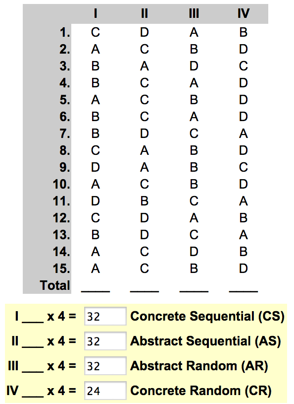
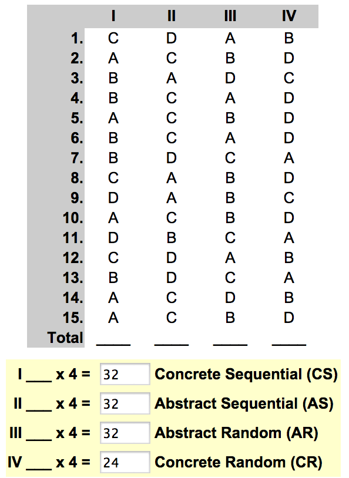

Cultural Blog: Week 3
Thinking Style and Learning
August 2, 2014

August 2, 2014

When I frist took the Gregorc Thinking Style test during the Prep Phase, I was in the middle of final exams and couldn't devote much time or brain power. As a result, I don't think my original score (tied for both abstract thinking styles) was absolutely correct. Today, I retook the exam and got a different result.
I wasn't too surprised to learn that my thinking style is all but balanced between all styles. This isn't a common test result. Usually, people score highly in either one style or two styles sharing one quality (both abstract or both random, for example). But I prefer to learn various kinds of information differently. My whole life, I have been both a science and a humanities person. Next year, I'll start medical school, but I majored in the classics. One of my favorite parts of college was writing and editing my school's science/medicine section. I loved showing people how complex topics could be awesome.
Now that I think about it, it really does make a lot of sense:
- I imagine how a yoga pose should feel in order to reach it (abstract random).
- I first do math problems in my head (abstract sequential), but if they're really bugging me I write it all out, in order, on paper (concrete sequential).
- I feel and imagine literature (abstract random).
- When I code, I like to tinker and experiment until it works (concrete random).
Some might see this kind of Gregorc result as a disadvantage. I see it as a challenge and an opportunity!